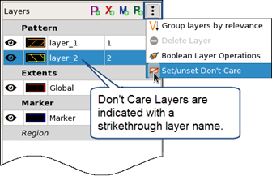
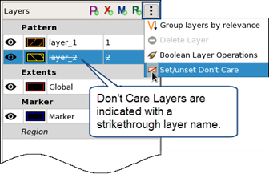

Creating a New Pattern
You can use the Pattern Matching GUI to add a new pattern to a pattern library. The drawing tools in the GUI are used to define pattern shapes.
Tip
You can also copy existing patterns. See “Copying Patterns”.
Prerequisites
A pattern library is open in the GUI. See “Invoking the Calibre Pattern Matching GUI”.
Procedure
- Click the New Pattern button
(
 ) or right-click the
pattern library name and select New Pattern.
) or right-click the
pattern library name and select New Pattern. - Create
the pattern.
- Select the pattern layer in the Layers tab to the right of the pattern canvas.
- Click
the Create Rectangle (
 ) or Create
Polygon () button
and draw a shape.
) or Create
Polygon () button
and draw a shape. - Use the other tools as needed to adjust the pattern shapes.
Note:Take care with adding non-Manhattan shapes, which may have their length or width snap differently if an edge is off-grid. In addition, non-Manhattan pattern polygon edges should not intersect with pattern extents.
To draw only Manhattan shapes when drawing polygons, press and hold the Ctrl key while drawing. To set the drawing mode for polygons, choose and choose Arbitrary or Manhattan.
- (Optional) If any pattern layers are Don’t Care
layers, select the layer in the Layers tab and
choose
 >
> Set/unset Don’t Care. 
Set/unset Don’t Care. See “Don’t Care Pattern Layers”.
- Click the
 (Save
Library) button to save the changes.
(Save
Library) button to save the changes.